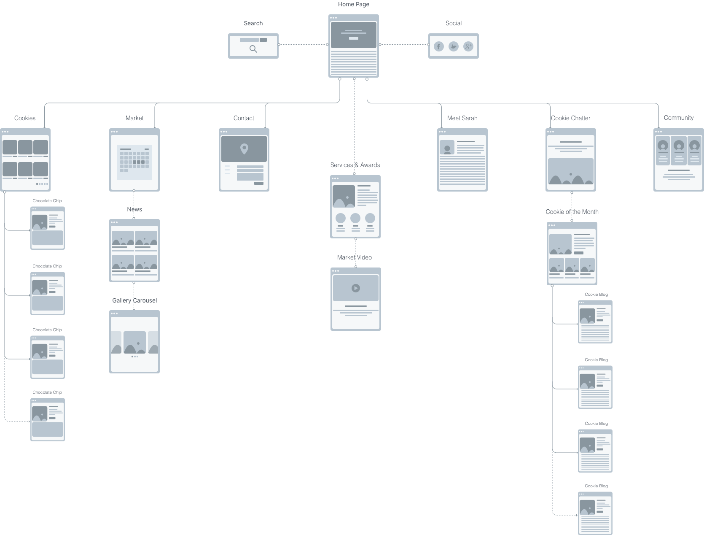
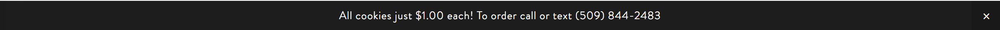
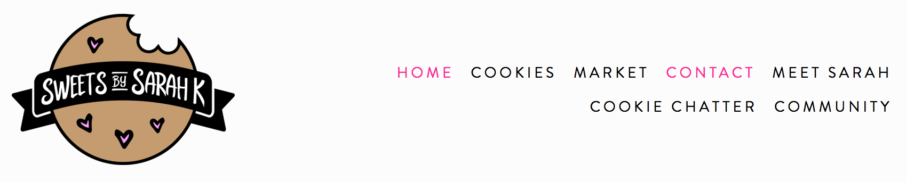

Sweets by Sarah K
Do you love cookies?! You've come to the right place. I created Sweets By Sarah K's website from the ground up and helped create and organize content. This website is a work in progress as there is still more functionality to be added. I maintain weekly communication with the business owner to update content.
My Role
Web Designer
Made For
Web & Mobile
Link

Site Map
Wireframes
UI Elements
To create a cohesive, intuitive site, the UI elements were iterated upon several times.
Announcement Bar
In January 2018 when Sarah and I first met to discuss her expectations for the site, she had not yet decided on a set price for her cookies, so she asked that pricing not be on the site. However, after several months of customers asking her prices, Sarah decided it would be best to put a set price of $1.00 per cookie on her site. She also prefers customers to contact her via her mobile phone instead of email or the contact form on the site.I decided to add an announcement bar to the top of the site so users can always easily see how to contact Sarah and what the price per cookie is.
Social Media & Search Bar
Sarah is very active with marketing and sending updates to her customers via her Facebook and Instagram pages. I decided to put links to her social media accounts and email above the main navigation menu to encourage users to follow her activity. I included the search in this menu as well to allow users to quickly access cookie information via the tagging system I created. For example if a user searches "gluten free" all gluten free cookie options will be displayed, as well as 'Cookie of the Month' blog posts that include gluten free options.
Main Navigation
Sarah's main brand color is a bright hot pink, so I added accents to the website using the hot pink to stay consistent with her marketing and to give the site a fun, sweet feel. The active page nav item becomes hot pink and nav items are pink on hover to match the social media/search bar as well. I'm considering moving the logo above the main nav and center the nav items in the next iteration.
